|
|
runSingleTCW - Build Annotated Database Guide |


|
|
|
|||
- Dataset is one of the following: (1) A file of sequences with optional count data from conditions, where the sequences can be nucleotide or amino acid. (2) A set of sequences to assemble, with optional quality data.
- Conditions may be tissues, treatments, etc that are to be compared, with optional replicates.
- AnnoDBs are FASTA files of sequences (nucleotide or amino acid) to compare the dataset sequences against for annotation. TCW provides special support for UniProt, but can use any file of sequences (e.g. Genbank nr), see runAS for obtaining and formatting the files.
- NT-sTCWdb is a database built with nucleotide sequences. AA-sTCWdb is a database built with amino acid sequences.
Contents
- Running the demo -- Highly recommended to do this first
- Creating a new project
- Build Database
- Instantiate (optional Assembly)
- Annotation
- AnnoDBs and UniProt
- GO annotation (also InterPro, EC, Pfam, KEGG)
- ORF finder
- Similar pairs
- Adding to annotation
- Adding remarks and locations
- Remove...
- Trouble shooting
- Differential Expression
- Build Database
- Important details
- View/Query (
viewSingleTCW )
Running the demo | Go to top |
The following three demos are supplied with the package to test
| Demo | Description | Documentation |
|---|---|---|
| demoTra | Transcripts with counts, locations, remarks | This section |
| demoAsm | Assemble transcripts and ESTs | Assembly Guide |
| demoPro | Protein sequences with counts | Same steps as for demoTra |
At the command line, type
./runSingleTCW
|
The window shown on the right will be launched.
Select demoTra from the →A command button will turn inactive while it is executing, and there will be output to the terminal with any errors, warning and the state of execution. →A command button will be inactive when it is not valid to run, e.g.
the →The | 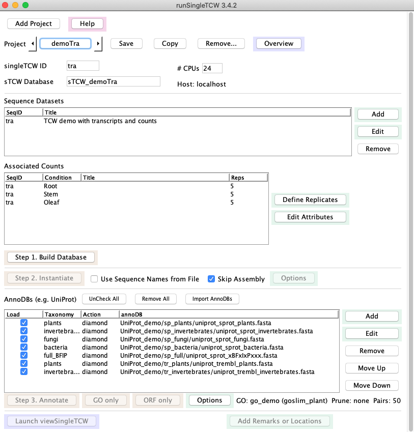 |
{kind=link}
1. Click the
This loads the datasets in this section; there is one
dataset of transcripts with count data for three
conditions ("Stem","Root","OLeaf"), with five replicates each.
2. Click the
- The
Skip Assembly was checked so the transcripts will simply be loaded, without assembly. - The
Use Sequence Names From File is not checked, meaning that the TCW will assign new, sequentially-numbered names prefixed by the singleTCW ID.
From this point on, you may
3. Click the
This searches against several UniProt partial databases which have been provided as part of the package.
There may be one or more prompts for you to answer at the terminal; keep an eye on the terminal until it says "Start annotating sequences", at which point, it will run without any further prompts. For example, if the GO database has not been built yet (see Step 5), the following will be written to the terminal:
+++Warning: GO_tree go_demo is missing; ignoring GO step --Please confirm above parameters. Continue with annotation? (y/n)?Answer 'y' to continue.
 Log file: The output to the terminal and to the file projects/demoTra/logs/anno.log will look something like
this log (this includes the GO annotation).
Log file: The output to the terminal and to the file projects/demoTra/logs/anno.log will look something like
this log (this includes the GO annotation).
4. Click the
- Select the "..." on the same line as the label
Location file: , select the file "traLocations.txt", then select the buttonAdd on the same line. - Select the "..." on the same line as the label
Remark file: , select the file "traRemarks.txt", then select the buttonAdd on the same line.
5. To build the GO database, see
Demo annotation setup. Then execute
Time for adding the GOs: This take longer than the other TCW steps, where it can takes around 2 to 5 minutes for this demo. If it takes a lot longer than 4 minutes for this step, check your max_allows_packet (see Trouble shooting).
6. To compute differential expression (DE), install R and the respective packages. From the command line, execute
./runDE traThe DE Guide describes how to install the necessary packages, and how to add DE p-values to the TCW database. If Step 5 has been run, then you can also add the p-values for the GO.
Overview: See overview for the final demoTra overview from the above 6 steps.
7. (Optional) Add non-UniProt annoDBs
| 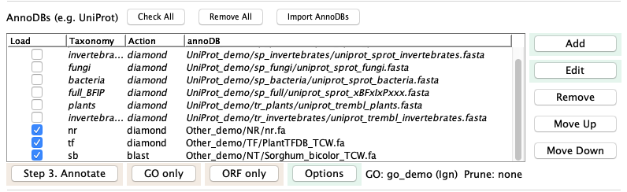 |
{kind=link}
- GOs: If you add more UniProt databases, you will want to redo GO.
But since none of these annoDBs have GOs, the GO computation does not need to be redone;
on the
Options panel, selectIgnore on Annotate (the "GO: go_demo (Ign)" text in the image above indicates this has been set). - Pairs: if you had previously computed pairs, go to
Options and unselect this option. - Select
Annotate .
?--Annotation exists in database. Enter [a/d/e]
Add to existing annotation [a], Delete annotation [d], Exit [e]: a
Read Creating AnnoDBs from other databases
to see how these were formatted.
CREATING A NEW PROJECT | Go to top |
Before starting, follow the steps of Installation. Make sure your HOSTS.cfg is correct.
To create a new project, press the
| 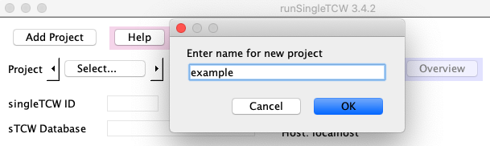 |
{kind=link}
{kind=link}
singleTCW ID: This should be a short descriptive name (2-5 characters, e.g. "ex"). It is used for the following:
- This can be used as a command line parameter to
runDE andviewSingleTCW , e.g. "viewSingleTCW ex". - If TCW generates the sequence names (if
Use Sequence Names from File is not checked), the singleTCW ID followed by sequential numbers will be used, e.g. ex_00001, ex_00002, etc.
Instead of using the
Build Database | Go to top |
Input files
There are three possible scenarios:1. Sequence and count files
The typical input is a file of transcripts and associated read counts. The transcript file is a FASTA file, where the sequence name must be under 30 characters, using only letters, numbers, and underscores.The sequence names in the count file must match the sequence names in the sequence file. The count file is a tab or space delimited file. The first line of the count file is the heading "SeqID" (or any label) followed by the replicate names. The replicate names should end in the replicate number, e.g.
SeqID Leaf1 Leaf2 Leaf3 Root1 Root2 Root3This defines two conditions with three replicates each. The remaining rows must have the exact same number of columns. More information is provided in Defining count data.
The conditions will be displayed in
2. Sequence and quality files
TCW supports assembly of Sanger ESTs, 454 reads, or a mix of these datasets with transcripts. See Assembly names for more information on this data.3. Multiple sequence files
You may enter multiple sequence and condition files, which may or may not be assembled. You must make sure that all "Condition" and sequence names are unique.Entering a sequence dataset
|
A TCW project must have at least one sequence dataset, which is a FASTA file of sequences.
Select | 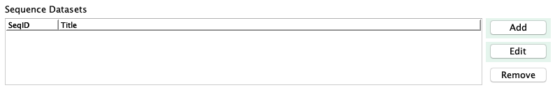 |
|
Additional information:
| 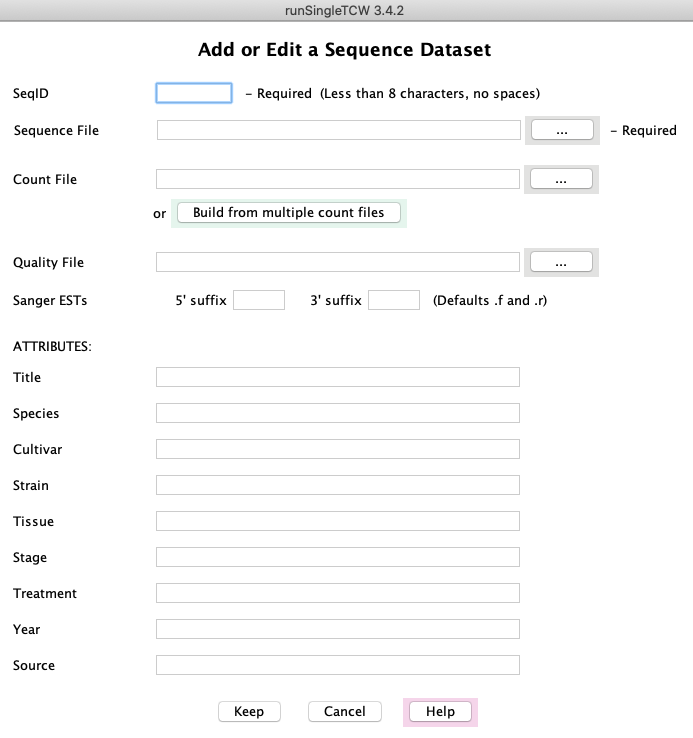 |
{kind=link}
{kind=link}
Quality File: For Sanger ESTs or 454 data, there may be a quality file (standard Phred quality scores in FASTA format).Sanger ESTs: TCW assumes the 5' ESTs have the ".f" suffix and the 3' ESTs have the ".r" suffix. If there are different from this, enter the correct ones.
After entering the files and attributes, select
Define all datasets, then select
Updating attributes
The attribute information can be added or changed after the database is created by using the
Defining count data | Go to top |
|
When | 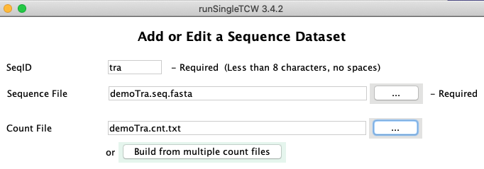 |
|
The panel shown on the right is part of the main panel. The
sequence dataset will be shown in the first table, while the conditions (column headings from the count file)
will be listed in the second table.
Use | 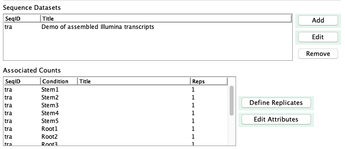 |
{kind=link}
{kind=link}
Biological replicates | Go to top |
|
If you have biological replicates, you now need to click The first column shows the sequence SeqID, which you entered when creating the sequence dataset. The second column shows the "Column name from file", which are the column headers in the count file (see example below). The third column shows the "Condition", which groups the replicates into a single condition.
If the replicates names in the count file are named with the format
"condition name + replicate number" (e.g. Root1),
then |
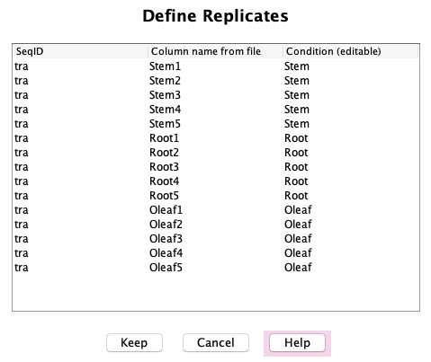 |
{kind=link}
Otherwise, you will need to edit the "Condition" column to map your replicate names to their condition. To edit a "Condition", highlight the row, then click on the appropriate cell (it is a little finicky, you may need to click at the beginning or end or double click...); it will turn white indicating you can edit the cell.
|
On |
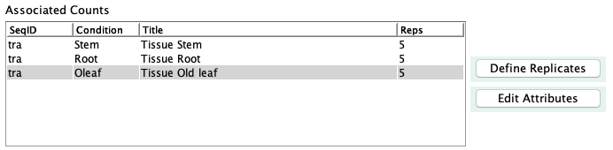 |
{kind=link}
Naming rules:
- There must not be any duplicate names between the
SeqID column of the first table and theCondition of the second table, e.g. there may not be aSeqID of "Root" in this example. - There can be NO duplicate replicate or condition names between Sequence Datasets.
The count file | Go to top |
SeqID Stem1 Stem2 Stem3 Stem4 Stem5 Root1 Root2 Root3 Root4 Root5 Oleaf1 Oleaf2 Oleaf3 Oleaf4 Oleaf5 tZoR_002048 556 572 766 770 777 294 361 291 300 399 264 173 162 407 382 tZoR_147465 1172 1965 1009 1110 2245 10 425 593 251 347 1542 880 1648 3043 1024 tZoR_108557 51 52 73 41 49 2 131 64 70 108 0 10 5 5 10 tZoR_118798 52 51 35 37 33 1 69 138 61 134 8 9 7 21 6The count values can have decimal points, but the numbers will be rounded.
Build from multiple count files
It is common to have separate count files for each sample, in which case, you can use theThe easiest way to handle many sample files is to put them in one directory. Name each
file with the "condition name + replicate number"; TCW parses up to the first "." to determine the condition
and replicate number (the suffix can be whatever you want).
For example, in the directory
Root1.cnt Root2.cnt Root3.cnt Root4.cnt Root5.cnt Tip1.cnt Zone1.cntNote, this is a different set of conditions then shown in the
To build the file, select
|
From the resulting panel, elect The file prefix (e.g. Root1) is shown in the "Rep name" column, and is used as the column heading in the combined file. Furthermore, the replicates for a condition will be grouped together by the text up to the number (as shown previously in Define biological replicates). Select |
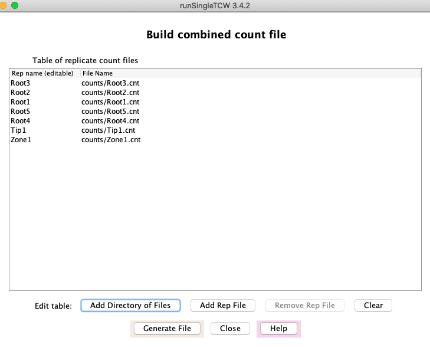 |
{kind=link}
If your files are not in one directory, or not named correctly, you will need to add them individually
using the
As already described, the replicates are grouped by clicking the
Instantiation (with optional assembly) | Go to top |
Press
- Characters other than letters, numbers, or underscores will be replaced by underscores.
- The names must be under 25 characters. Note that the names supplied by sequencers are often longer than allowed, which will make this fail.
Annotation | Go to top |
- Compares one or more protein and/or nucleotide databases ("annoDBs") to each sequence in the database. If the annoDBs are from UniProt, add the associated GO annotations.
- Compute GC content and ORFs, where the ORF computation uses the functional annotation.
- Compute pairs of similar sequences within the input set.
AnnoDBs and UniProt | Go to top |
The
|
Select | 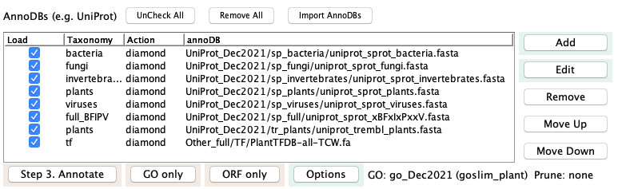 |
{kind=link}
|
For example, if the DBtype is 'sp' (SwissProt) and the taxonomy is 'plants',
the | 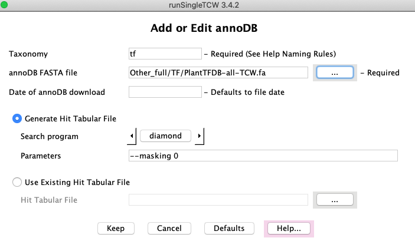 |
{kind=link}
You can supply your own hit results file (must be in tabular format). You must still provide the annoDB FASTA file as it extracts the description and species from it.
Options panel | Go to top |
|
The The second option and part of the third are not available for TCW database created from protein sequences. | 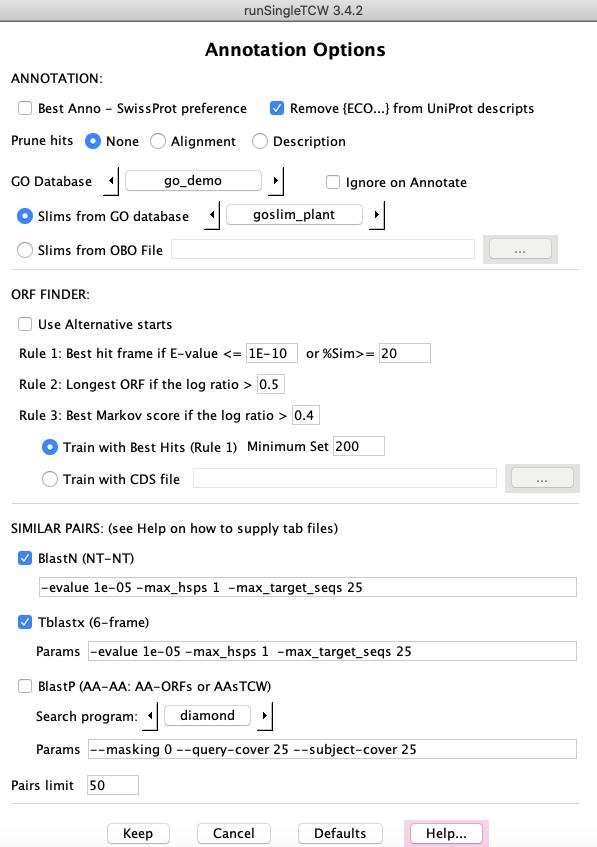 |
{kind=link}
ANNOTATIONS:
>sp|A0A096SRM5|708A6_MAIZE UDP-glycosyltransferase 708A6 {ECO:0000303|PubMed:24045947}
Selecting this option will remove the {ECO..} portion, e.g. remove {ECO:0000303|PubMed:24045947}.
| Keep all hits found using the search parameters provided on the | |
| If all alignment columns (e.g. bit-score, E-value, %similarity, etc) are the same between two hits for a sequence, only keep the first. | |
| For each annoDB, if two descriptions are the same the best hit will be retained. The descriptions are compared after removing any trailing "{...}" text and using case-insensitive. |
GO annotations (GO, KEGG, EC, InterPro, Pfam annotations) | Go to top |
| Once the GO database is created, it can be selected in this drop-down. | |
| Once the GO database is selected, it will display
the available | |
| If you do not want |
ORF FINDER: | Go to top |
GC content and ORF finding is always performed when
SIMILAR PAIRS:
All three (More information is provided in the Help page of the
Adding to annotation
Additional annotation can be added at a later time; see Update and Redo annotation in the Annotate Details Guide.
Adding remarks and locations | Go to top |
|
Select the Both the locations and remarks can be search and viewed in | 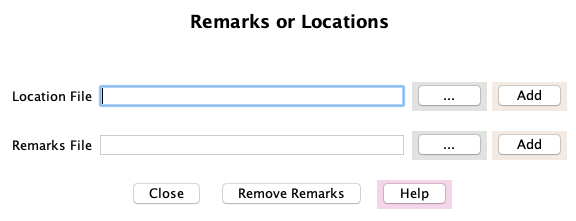 |
{kind=link}
Add Location File
Select the "..." on theThe file is a set of rows where the first word of each row is the sequence name and the rest of the row is the format:
group:start-end(strand), e.g. SC_1:392-496(-)The "group" would be the supercontig, scaffold, chromosome, linkage, etc. If TCW can extract numbers/X/Y from the end of the group (e.g. chr1, chrX), it adds a column containing just the "Group" number that can be sorted numerically in
A script is available, scripts/extractCodingLoc.pl, to generate the transcript sequence file from a genome sequence and GFF3 file. It also generates the location file in the format needed by TCW. It only works with a subset of the GFF3 files, so probably needs to be modified for your GFF3 or GTF file. It uses BioPerl.
The group name, start, end and strand are columns in the TCW database that can be viewed in
Add Remark File
Select the "..." on theThe file is a set of rows where the first word of each row is the sequence name and the rest of the row is the Remark.
- Single and double quotes will be changed to spaces.
- Semi-colon will be changed to a colon.
In
Remove Remarks
Selecting this button will remove all user remarks. There are also "TCW Remarks" that are added during ORF finding; these are not removed.
Remove... | Go to top |
| The image on the right shows what can be removed. The checked items are useful for redoing parts of the annotation, as discussed in Annotate Guide Update and Redo annotation section. | 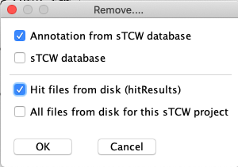 |
{kind=link}
Trouble shooting | Go to top |
If the information on the
If you have many sequences (e.g. transcripts) in the database and/or many annoDBs,
this can take a lot of memory. Running
./execAnno <project>You can increase the memory size in the
Also see Trouble shooting.
Differential Expression | Go to top |
For full details on the DE computation, see the Differential Expression Guide.
IMPORTANT DETAILS
Directory structure and configuration files | Go to top |
When a project is added with
Though you can put your data files anywhere that
The three major steps write to the projects/<project> directory. The
Batch Processing | Go to top |
| Action | Executable | Configuration |
| Build Database | LIB.cfg | |
| Instantiate | sTCW.cfg | |
| Annotate | sTCW.cfg |
The LIB.cfg and sTCW.cfg files can be edited with a text editor, but be careful as
Each command line script takes as input the <project> name, along with some optional flags; execute the script followed by -h to see the flags (e.g. ./execAnno -h). All three take as input the "-n", which suppresses any prompts and uses defaults (as described by -h); this is good for batch processing.
The instantiation (or assembly) computed TPM (transcripts per kilobase per million); in order to compute the RPKM instead, execute:
./execAssm <project> -r
VIEW/QUERY (
| Go to top |
- From the command line (./viewSingleTCW), which brings up a panel of mySQL databases with the sTCW_ prefix, where databases can be selected to view.
- From the command line using the
singleTCW ID orsTCW Database as a parameter (e.g. viewSingleTCW tra). - Through the button at the bottom of the Manager interface (Fig. 1).